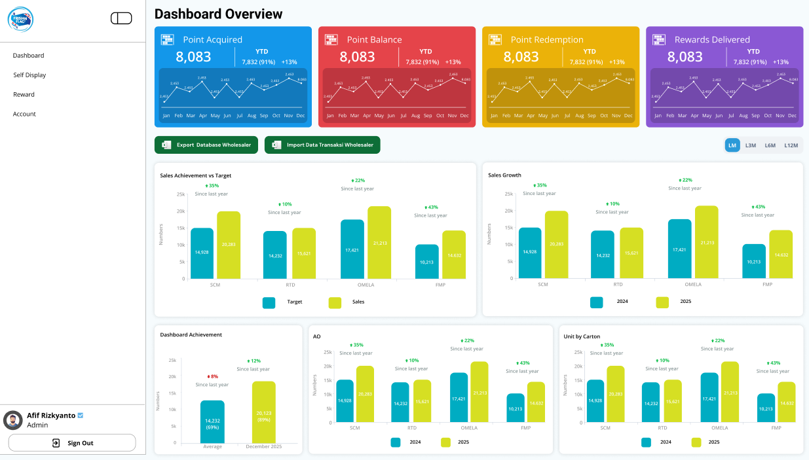
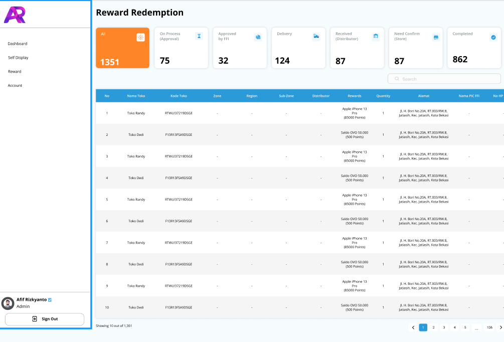
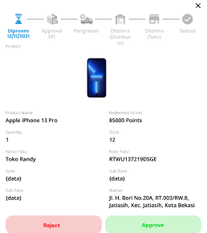
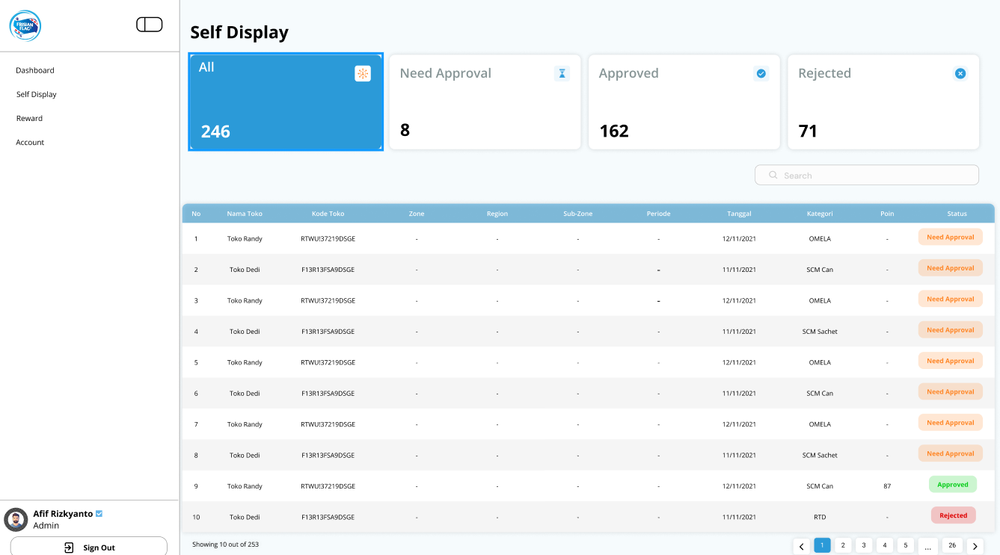

Goal achieved
Menggabungkan pemantauan saldo, visualisasi statistik keuangan (donut chart), serta manajemen tugas langsung dalam satu layar utama tanpa membebani cognitive load pengguna.
 Afif RizkyantoUI/UX DESIGNER
Afif RizkyantoUI/UX DESIGNER
CASE STUDY / 03
Transforming a sparse desktop workspace into an intuitive mobile product that brings daily tasks, finance, and weather together in one clear, information-rich experience.
Interface desktop terlalu padat saat dipindah ke perangkat seluler.
Input data prioritas dan tanggal terasa rumit.
Status tugas kurang menonjol.
Mengadaptasi layout menjadi card-based design yang ringkas dan thumb-friendly pada iPhone 17.
Dibuat form field yang bersih dengan komponen dropdown serta date picker yang intuitif.
Menambahkan color-coded badge (misal: Merah untuk Tinggi) agar hirarki visual lebih jelas.
Tipografi: Sans-Serif modern (Inter / SF Pro Display) agar keterbacaan tetap optimal pada layar seluler.
Komponen: Reusable Buttons, Input Fields, Badges, dan Dynamic Island Navigation Header.






Saya membuat diagram alur pengguna untuk menunjukkan cara-cara pengguna berinteraksi dengan fitur baru ini. Dengan melakukan ini, saya dapat memastikan bahwa saya menyertakan semua kerangka kunci yang diperlukan saat membuat wireframe untuk prototipe saya.

Saya kemudian mulai membuat draf gambar beresolusi rendah yang diberi anotasi untuk membantu memvisualisasikan bagaimana Dailypulse ini akan cocok dengan penggunanya.
Setelah saya mendapatkan elemen desain dan warna dari pedoman, saya langsung menuju ke desain mockup. Dan ini adalah desain awal Dashboard.
Mengtransformasi antarmuka web minimalis Workspace Mobile menjadi desain aplikasi DailyPulse berkonsep neuomorphism seluler yang kaya informasi, visual, dan interaktif.
Setelah memahami cara kerja fitur tersebut serta penempatannya, saya melanjutkan mendesain bingkai dengan detail tinggi. Sangat penting agar fitur baru ini terintegrasi dengan sempurna ke dalam antarmuka. Warna, font, dan grafik yang sama digunakan.
Menggabungkan pemantauan saldo, visualisasi statistik keuangan (donut chart), serta manajemen tugas langsung dalam satu layar utama tanpa membebani cognitive load pengguna.
Penggunaan grafik visual (donut chart) dan color-coded badges (prioritas tugas) terbukti jauh lebih efektif menyampaikan informasi dibandingkan sekadar teks angka.
Iterasi desain akhir berhasil memangkas langkah navigasi pengguna dalam memantau ringkasan harian dan mengakses fitur transaksi maupun daftar tugas dengan jauh lebih cepat.